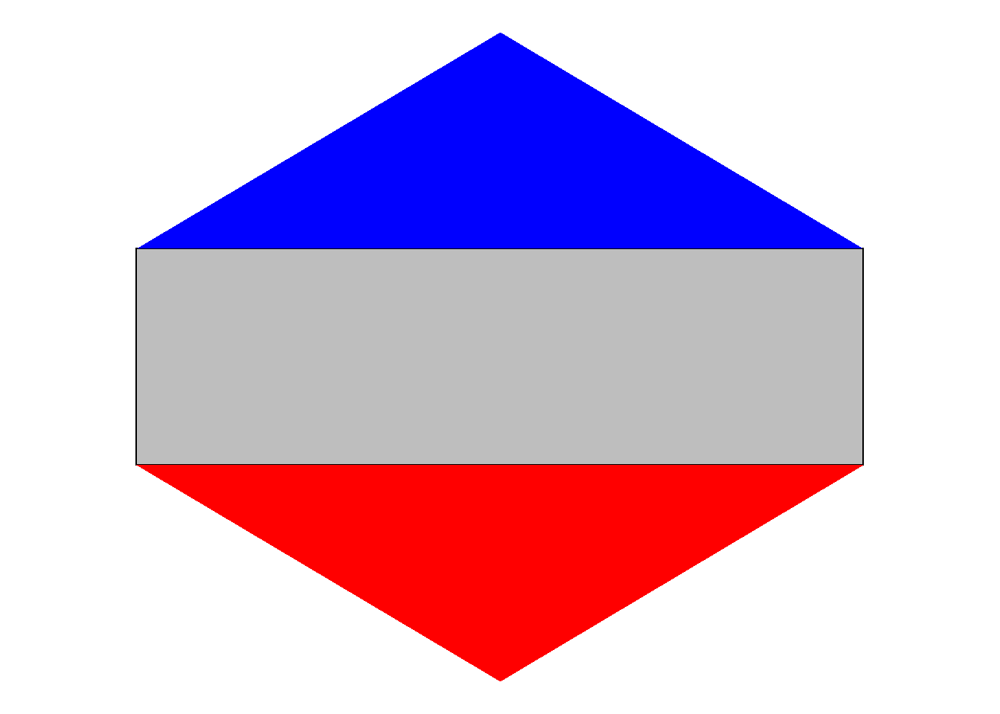

library(janitor)
library(readxl)
library(tidyverse)
library(geofacet)
library(cowplot)
## raw data
raw_data = readxl::read_excel(path = "raw-data/family medical leave preemption dataset.xlsx",
sheet = 'Sheet2') %>%
drop_na() %>%
select(name = 1, family_leave = 2, preemption = 3, abortion_ban_risk = 4) %>%
mutate_all(~as.character(.x))
## clean state codes
xwalk_states = geofacet::state_ranks %>%
select(name, state) %>%
distinct()
data = raw_data %>%
mutate(name = name %>% recode("Washington DC" = "District of Columbia" )) %>%
left_join(xwalk_states)
data#3 - Help with grant informatics infrastructure language
Issue
URL: https://github.com/Drexel-UHC/analytics-core/issues/7
I’m hoping to make a figure that shows different policy statuses of states (abortion ban, proposed abortion ban, no abortion ban; Paid family leave, no paid family leave; paid family leave preemption, no preemption), with the states in the location of the US map…
I think geofacet mightttt get us close to the figure I’m hoping to make, but not quitee there.
Example

Evaluation
Just a brief breakdown of the plot above from the original article. There are two layers: 1) rectangles show abortion policy categories 2) triangles show various degrees of coverage within sexual education by topic (contraception in blue vs abstinence in orange). In other words larger/more-orange triangle at bottom indicates more sexual seduction emphasize abstinence and large/more-blue triangle at top indicates more sexual education emphasis on contraception. In terms of data there each state would have three points: abortion policy categories, coverage of contraception, coverage of abstinence.
Lets take a look at the data sent over along with this request.
Adapting this visualization to the table above would give the following features:
- The rectangle would be similiar with shade mapping to the abortion ban risk
- The top blue triangle would map to family leave.
- The bottom orange triangle would map to preemption family leave. I am assuming preemption is bad?
Proof of concept
The whole workflow relies on geofacet::face_geo(). The main function in this package is facet_geo() and its use can be thought of as equivalent to ggplot2’s facet_wrap() except for the output it creates. The first step is to create a function that creates the individual state plots.
## Set coordinates
container_width_height = 10 # a 10 by 10 coordinate system
rect_width = 6
rect_height = 3
rect_xmin = 2
rect_xmax = rect_xmin + rect_width
rect_x_mean = mean(c(rect_xmin,rect_xmax))
rect_ymin = 4
rect_ymax = rect_ymin + rect_height
## Append coordinates to data for geom_polygon
data_w_coords = data %>%
mutate(top_triangle_x = list(c(rect_xmin,rect_xmax,rect_x_mean)),
top_triangle_y = list(c(rect_ymax,rect_ymax,rect_ymax+rect_height)),
bottom_triangle_x = list(c(rect_xmin,rect_xmax,rect_x_mean)),
bottom_triangle_y = list(c(rect_ymin,rect_ymin,rect_ymin-rect_height))
) %>%
unnest(cols = c(top_triangle_x, top_triangle_y, bottom_triangle_x, bottom_triangle_y))
## create a function to make basic shapes
geom_hex_for_alina = function(data){
data %>%
ggplot() +
geom_rect(aes(xmin = 0, xmax = 10, ymin = 0, ymax = 10), fill = "white") + # 10 by 10 container
geom_rect(aes(xmin = rect_xmin, xmax = rect_xmax,ymin =rect_ymin, ymax = rect_ymax), # add rectangle
color = "black", fill = "grey") +
geom_polygon(aes(x=top_triangle_x,y=top_triangle_y), fill = 'blue') + # top triangle
geom_polygon(aes(x = bottom_triangle_x, y = bottom_triangle_y), fill = 'red') + # bottom triangle
theme_void()
}
## Test function to plot for a single state
data_w_coords %>%
filter(name == "Alabama") %>%
geom_hex_for_alina()Great now let’s us this just append a geofacet::face_geo() to do do the by state faceting; note we are now passing all the states data.
data_w_coords %>%
geom_hex_for_alina() +
facet_geo(~ state) 
Great I think this approach is getting us to what we want.
Polishing
There are a few things to do to polish it a bit.
- display triangles based on the data features
- display abortion ban risk as shade of triangle
- minimize the inidividual plot margins (to make the layout more similiar to our example)
- remove facet_wrap strip text/label
- move the 2 letter state abbrv into the rectangle
Plot
## Set coordinates
height = 10
padding_x = 1
width = 8
rect_xmin = padding_x
rect_xmax = width + padding_x
rect_x_mean = mean(c(rect_xmin,rect_xmax))
rect_ymin = height/3
rect_ymax = rect_ymin*2
## Manual colors for data features
abortion_colors = c("0" = "#e7e8e9",
"1" = "#c1c2c4",
"2" = "#8a8c8f",
"3" = "#5f6062",
"4" = "#000000")
xwalk_colors = c(abortion_colors,
"white" = "white",
"black" = "black",
"0_family_leave" = "white",
"1_family_leave" = "#00aeef",
"0_preemption" = "white",
"1_preemption" = "#f1592a")
## Operationalize data for plot
data_processed = data %>%
## Append coordinates to data for geom_polygon
mutate(top_triangle_x = list(c(rect_xmin,rect_xmax,rect_x_mean)),
top_triangle_y = list(c(rect_ymax,rect_ymax,height)),
bottom_triangle_x = list(c(rect_xmin,rect_xmax,rect_x_mean)),
bottom_triangle_y = list(c(rect_ymin,rect_ymin,0))
) %>%
unnest(cols = c(top_triangle_x, top_triangle_y, bottom_triangle_x, bottom_triangle_y)) %>%
## operationalize colors
mutate(
state_text = ifelse(as.numeric(abortion_ban_risk)>2, "white","black"),
family_leave = paste0(family_leave,"_family_leave"),
preemption = paste0(preemption,"_preemption"))
## create a function to make basic shapes
geom_hex_for_alina = function(gg){
gg +
## add rectangle
geom_rect(aes(xmin = rect_xmin, xmax = rect_xmax,
ymin = rect_ymin, ymax = rect_ymax,
fill = abortion_ban_risk)) +
## Add state abbrv text
geom_text(aes(label = state, color = state_text),
x = height/2, y = height/2,
size = 3)+
## Top triangle (family leave)
geom_polygon(aes(x=top_triangle_x,y=top_triangle_y, fill = family_leave)) +
## Bottom triangle (preemption)
geom_polygon(aes(x = bottom_triangle_x, y = bottom_triangle_y, fill = preemption)) +
## Manual colors
scale_fill_manual(values = xwalk_colors) +
scale_color_manual(name = "state_text", values = xwalk_colors) +
theme_void()+
theme(
## Completely remove facet labels
strip.background = element_blank(),
strip.text.x = element_blank(),
## Remove legend
legend.position = 'none'
)
}
## Test facet
plot = data_processed %>%
ggplot() %>%
geom_hex_for_alina() +
facet_geo(~ state, grid = "us_state_grid2")
plot
Legend
## Create funciton to layout for legend
geom_hex_legend_for_alina = function(gg, legend_padding){
legend_xmin = case_when(
legend_padding == "left" ~ 0 - 2*height,
legend_padding == "right" ~ 0
)
legend_xmax = case_when(
legend_padding == "left" ~ 0,
legend_padding == "right" ~ 0 + 3*height
)
gg +
geom_rect(aes(xmin = legend_xmin, xmax = legend_xmax,
ymin = 0 - 1*height, ymax = height + 1*height),
fill = "white")
}
## Hexagon Legend
title <- ggdraw() +
draw_label(
"Triangles show paid family\nleave and preemption policy",
fontface = 'bold',
x = 0.5,
hjust = 0.5
) +
theme(
# add margin on the left of the drawing canvas,
# so title is aligned with left edge of first plot
plot.margin = margin(5, 0, 0, 0)
)
legend_hex_1 = data_processed %>%
filter(state == "PA") %>%
mutate(state = "") %>%
ggplot() %>%
geom_hex_legend_for_alina(gg = ., legend_padding = "left") %>%
geom_hex_for_alina()
legend_hex_2 = data_processed %>%
filter(state == "OR") %>%
mutate(state = "") %>%
ggplot() %>%
geom_hex_legend_for_alina(gg = ., legend_padding = "right") %>%
geom_hex_for_alina()
hex_legend_row = plot_grid(legend_hex_1, legend_hex_2)
hex_legend = plot_grid(
title, hex_legend_row,
ncol = 1,
rel_heights = c(3, 7)
)
## Rectangle Legend
side = 10
padding = 1.5
rect_width = (side - 2*padding)/5
legend_y = 6
legend_height = 1
dfa = tibble(xmin = padding + 0:4*rect_width,
xmax = padding + 1:5*rect_width,
ymin = legend_y,
ymax = legend_y + legend_height,
fill = unname(abortion_colors))
legend_risk = ggplot() +
## Container (10 by 10)
geom_rect(aes(xmin = 0, xmax = 10,
ymin = 0, ymax = 10),
fill = "white") +
## Legend for rectangles
geom_rect(dfa, mapping =
aes(xmin = xmin, xmax = xmax,
ymin = ymin, ymax = ymax),
fill = dfa$fill) +
## Top label
geom_text(aes(label = "Rectangle show abortion ban risk"),
x = side/2, y = legend_y + legend_height + 1,
size = 4,
fontface = 'bold')+
## Left label
geom_text(aes(label = "Less risk"),
x = side/5, y = legend_y - 1,
size = 3) +
## Rigth label
geom_text(aes(label = "More risk"),
x = 4*side/5, y = legend_y -1,
size = 3) +
theme_void()
## Layout
legend = plot_grid(legend_risk,hex_legend,
ncol = 2,
rel_widths = c(2, 2))
figure = plot_grid(legend,
NULL,
plot,
ncol = 1,
rel_heights = c(2,1,7))
ggsave(filename = "output/v1.jpeg",
plot = figure,
height = 8,
width = 8
)Hi